LAPACK¶
A handful of LAPACK routines are currently used by Elemental: a few routines for querying floating point characteristics, serial Cholesky and LU factorization, triangular inversion, and a few other utilities. In addition, there are several BLAS-like routines which are technically part of LAPACK (e.g., csyr) which were included in the BLAS imports section.
The prototypes can be found in include/elemental/imports/lapack.hpp, while the implementations are in src/imports/lapack.cpp.
Machine information¶
In all of the following functions, R can be equal to either float or double.
- R lapack::MachineEpsilon<R>()¶
Return the relative machine precision.
- R lapack::MachineSafeMin<R>()¶
Return the minimum number which can be inverted without underflow.
- R lapack::MachinePrecision<R>()¶
Return the relative machine precision multiplied by the base.
- R lapack::MachineUnderflowExponent<R>()¶
Return the minimum exponent before (gradual) underflow occurs.
- R lapack::MachineUnderflowThreshold<R>()¶
Return the underflow threshold: (base)^((underflow exponent)-1).
- R lapack::MachineOverflowExponent<R>()¶
Return the largest exponent before overflow.
- R lapack::MachineOverflowThreshold<R>()¶
Return the overflow threshold: (1-rel. prec.)) * (base)^(overflow exponent).
Safe norms¶
- R lapack::SafeNorm(R alpha, R beta)¶
Return 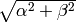 in a manner which avoids under/overflow. R can be equal to either float or double.
- R lapack::SafeNorm(R alpha, R beta, R gamma)¶
Return 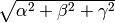 in a manner which avoids under/overflow. R can be equal to either float or double.
Givens rotations¶
Given  , carefully compute
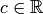 and 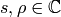 such that
, carefully compute
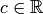 and 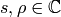 such that
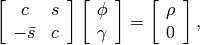
where 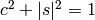 and the mapping from 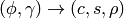 is “as continuous as possible”, in the manner described by Kahan and Demmel’s “On computing Givens rotations reliably and efficiently”.
- void lapack::ComputeGivens(R phi, R gamma, R* c, R* s, R* rho)¶
Computes a Givens rotation for real 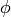 and
 .
.
- void lapack::ComputeGivens(C phi, C gamma, R* c, C* s, C* rho)¶
Computes a Givens rotation for complex and
.
Cholesky factorization¶
- void lapack::Cholesky(char uplo, int n, const F* A, int lda)¶
Perform a Cholesky factorization on 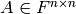, where 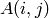 can be accessed at A[i+j*lda] and
 is implicitly
Hermitian, with the data stored in the lower triangle if uplo equals
‘L’, or in the upper triangle if uplo equals ‘U’.
is implicitly
Hermitian, with the data stored in the lower triangle if uplo equals
‘L’, or in the upper triangle if uplo equals ‘U’.
LU factorization¶
- void lapack::LU(int m, int n, F* A, int lda, int* p)¶
Perform an LU factorization with partial pivoting on 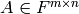, where can be accessed at A[i+j*lda]. On exit, the pivots are stored in the vector p, which should be at least as large as min(m,n).
Triangular inversion¶
- void lapack::TriangularInverse(char uplo, char diag, int n, const F* A, int lda)¶
Overwrite either the lower or upper triangle of with its inverse. Which triangle is accessed is determined by uplo (‘L’ for lower or ‘U’ for upper), and setting diag equal to ‘U’ results in the triangular matrix being treated as unit diagonal (set diag to ‘N’ otherwise).